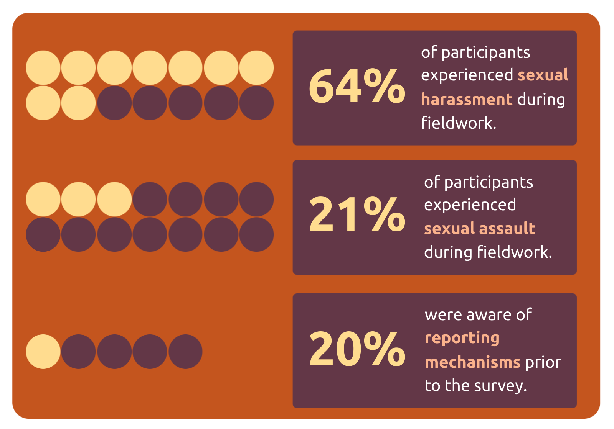

Let’s work together to make fieldwork safe.
The goal of this website is to provide researchers with accessible resources and action plans to prevent and report sexual misconduct.
A hub for safe, ethical, and informed fieldwork
The goal of this website is to provide researchers with accessible resources and action plans to prevent and report sexual misconduct.
A 2014 survey sampling >650 anthropologists revealed high frequencies of harassment and assault, and low frequencies of awareness of reporting procedures (Clancy et al. 2014: https://doi.org/10.1371/journal.pone.0102172)
Download and customize your safety materials below to protect yourself and your team.
A team-wide agreement on ethical and safe fieldwork protocols.
Open Google Doc